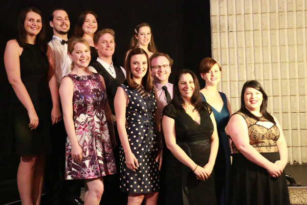

Aquapella

Aquapella are 50 singers from the Townsville area bringing you a cappella world music at its very best: inspiring and uplifting harmonies from around the globe. A South African party song, a Hungarian love triangle, "The Lion Sleeps Tonight" in French - a sumptuous variety of different languages, stories, rhythms and moods to entertain and move you in the wonderful common language of music. Come along and travel the world by song!
Choir director Beat Lehmann was born in Switzerland where he first became involved in choir music by participating in classical productions like Handel's Messiah, Mozart's Mass in C minor etc. A study year abroad gave him the opportunity to sing with the Pontardullais Welsh Male Choir. After completing an M.A. in Social Anthropology he concentrated on his other passion, dance, directing a Modern Dance Company for several years.
In 1986, Beat migrated to Australia where he completed a Ph.D. in Linguistics and involved himself in choir music again. For 12 years he conducted AkaBella, a well-known world music choir from Bellingen, NSW. AkaBella participated in major festivals like the National Folk Festival in Canberra, the Bellingen Global Carnival and theWoodford Folk Festival where they featured in the ABC documentary ìFestival on Fire and launched their first CD 'Mosaic'.
Beat moved to Magnetic Island in 2003 and has established a similarly successful world music choir for the Townsville area. Beat's choirs focus on the rich musical heritage of cultures around the globe. A South African party song, a Hungarian love triangle, a Mexican lullaby, a French version of 'The Lion Sleeps Tonight' to delve into the incredible variety and depth of a cappella world music and the cultures it represents, is not only fun, but a very enriching and uplifting experience.
Aquapella won the ABC Choir of the Year competition for Queensland in 2006.
beatlehmann@iprimus.com.au
Aviva Quartet

Four talented musicians combine their skills in a variety of musical styles including fiery Rhumbas, Tangos, Serenades - a mixture of the most devine and swoon-worthy pieces, guaranteed to delight the senses.
The group features Caroline Lloyd-Doolan and Susan Fraser on Violin, Ivy Wu on Cello and Jessica Winton on viola.
Caroline is a well known performer both locally and regionally and Susan is also well known on the local music scene.
Ivy hails from Brisbane having completed her studies in France.
Jessica has come back to Townsville after completing her degree in Tasmania.
The girls all have a passion for chamber music and are very excited to be able to form up a group that will be able to perform regularly both locally and in the surrounding regions.
Their concert will take listeners through a wonderful journey of beautiful melodies and the most romantic music that is guaranteed to leave the senses fulfilled and wanting more.
For more information -
Phone: 07 4724 2086
Mobile: 0402 255 182
e-mail admin@townsvillemusic.org.au
The Camerata Singers

The concept of the Camerata Singers originated in the 1980s when Susan Grinsell, who was teaching voice at James Cook University realised that ensemble singing was sadly lacking for tertiary music students.
Since then, Susan, along with repetiteur Carol Dall’Osto, has strived to bring quality ensemble singing to the wider community by performing at events from the Ingham Italian Festival through to Cotter’s Markets in the mall.
The Camerata Singers comprises a group of trained singers, both male and female, from age 18 and over who strive to provide quality performances in a range of styles from classical through to A cappella and contemporary.
A number of members also regularly participate in local music theatre and theatre productions. For further information or bookings contact the Music Centre 4724 2086
or email admin@townsvillemusic.org.au
Celtic Fyre

The alternative celtic rock band from North Queensland
Typical audience response: - "WOW - I wasn't prepared for that! Racing around the stage in kilts, blowing bagpipes, jumping from one instrument to the next, these guys know how to entertain!"
They will break your heart with the mournful and eerie sounds of the Great Highland Bagpipe and then crank it up real hard and rock you 'til you drop.
This 11 piece band is a fun-loving kick-em-in-the-pants band that just wants to rock - celtic style!
www.celticfyre.com
Harbourside Duo

Harbourside Duo is a new ensemble performing in Townsville and North Queensland featuring Monica Martin on Violin and David Roberts on Classical Guitar.
We perform a fine selection of music from Latin, Jazz, Celtic, Classical and popular styles.
Harbourside Duo is available for Corporate Functions, Weddings and private gatherings.
For further information or bookings contact David Roberts 0459 239 290
Visit www.davidrobertsguitar.com.au/Harbourside-Duo.html
Visit our website
Poms from Oz
Poms from Oz
Poms from Oz are Judy, Kathleen and Alan Pomeroy, a family of solo vocalists from North Queensland, Australia. All are dinky di Oz with Judy and Kathy being descendents of First Fleeters.
Their tight harmony and vocal strength bring a fresh feel to original, contemporary and traditional works, uncovering a rich tapestry of songs gathered in their travels from around the world. Most songs are a cappella but sometimes accompanied by guitar and/or harmonica. Moods in their songs range from downright to real tear jerkers and audience participation is encouraged. Their sound is distinctive, as Judy arranges all the songs specifically for their voices.
A tast brew of Oz songs and Oz voices, with a dash of guitar and harmonica. Open a nice bottle of red , sit back and enjoy. For further information or bookings contact the Music Centre 4724 2086
or email admin@townsvillemusic.org.au
Rosewood Guitar Quartet
Rosewood
Add some elegance to your next social event!
Have the Rosewood Guitar Quartet provide that special atmosphere by playing for your guests
Sample CD available on request
Phone: 0427 255 125
or email Joanne
TCB logo
The Townsville Concert Band are currently looking for musician members.
This is a local community band who meet once a week for rehearsals, and who play gigs around town throughout the year. The band plays a range of different styles of concert band music, ranging from classical to musical theatre and modern.
All levels and ages are welcome.
For more information -
-- email us hollie.clark1@jcu.edu.au
or phone Hollie: 04019 151 185
or phone Mark: 0408 088 675
see our Facebook page
Wassa
Wassa
Wassa is a six-piece percussion group performing traditional rhythms from West Africa on traditional instruments. The Townsville based group has been performing throughout North Queensland and as far as Papua New Guinea since 2001.
http://www.therhythmconnection.com/wassa.html
The Stokes Nicholson Big Band was formed in 1991 through collaboration between the late Roy Stokes and Les Nicholson. Each man had his own individual reasons for wanting a Big Band, perhaps influenced by the difference in their ages with Roy being 17 years older than Les. Roy wanted to create an opportunity to keep experienced musicians playing challenging music so their talents didn't go rusty. Les came from a different perspective and wanted to provide an opportunity for music students of all ages to sit beside experienced jazz musicians to absorb the musical synergy that classroom teaching alone cannot develop.
A number of experienced musicians were invited to join the various sections of the new Big Band with most sections being led by a member of Les' already well-established Pacific Mainstream Jazz Band. The original Principals were Roy Stokes (not a member of PMJB), saxophone; Les Nicholson, trumpet; Neville Minon, trombone; and Bob Hebden, rhythm. Roy, Neville and Peter Alloway were all still private music teachers at this time and some of their pupils were the first students to be part of this adventure.
The Stokes Nicholson Big Band was up and running, meeting once a month for rehearsals with an expectation that each section would practise individually or as a group in between these rehearsals.
Sadly Roy passed away on 1st January 1993 after a period of illness. Les continued to manage the band and conduct rehearsals, as well as playing first trumpet. In 1997 he enlisted the help of John Ruffle who took on the role of Musical Director, allowing Les to relax a little and enjoy his playing more. Roy would no doubt be very proud to see how much his beloved Big Band has developed since its formation as it is now a very accomplished band with a diverse repertoire and the technical expertise capable of backing great Jazz singers.
The band today demonstrates it has achieved the aims of both Roy and Les with experienced musicians arriving in town and feeling very proud to join such a powerful big band. A number of the original student members from 1991 are still in the band and have now joined the ranks of the experienced musicians and new students are still progressing from school bands to the Stokes Nicholson Big Band.